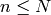
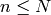

08 - Data Processing and Representation Principal Component Analysis (PCA)¶
Processing Methods¶
In face recognition windows of varying sizes are passed over the image at every point and each separate window size and position is assessed for the presence of a face.
The windows with faces represent are recorded. However each window consists of many pixels. Since there are so many pixels in a window it would mean storing a lot of data if we captured it all. This problem is amplified when more dimensions are added.
So in order to cut down on the amount of space needed to represent the data we undergo a feature extraction process which reduces the dimensionality of the data.
For this representation we can then classify the input.
Feature Extraction/Dimensionality Reduction¶
It is impossible to process raw image data (pixels) directly. There would be too many of them or the dimensionality could be too high. Also the the curse of dimensionality means that calculations take far longer as the number of dimensions increase.
The raw pixel data is processed to produce a smaller set of numbers which will capture the most information contained in the original raw data. This is often called a feature vector.
The basic principle is that from raw data (a vector)  of
of  dimensions to a new vector
dimensions to a new vector  of
of  dimensions (where ) via a transformation matrix
dimensions (where ) via a transformation matrix  such that will capture the information in .
such that will capture the information in .
Principal Component Analysis (PCA)¶
PCA is one of the most often used dimensionality reduction techniques.
Principal Components¶
All principal components (PCs) start at the origin of the ordinate axes. The first PC is in the direction of the maximum variance from the origin and subsequent PCs are orthogonal to the 1st PC and describe the maximum residual variance.
PCA Goal¶
We wish to explain/summarise the underlying variance-covariance structure of a large set of variables through a few linear combinations of these variables.
Applications¶
- Data Visualisation
- Data Reduction
- Data Classification
- Trend Analysis
- Factor Analysis
- Noise Reduction
An Example¶
Imagine a spring which is fixed to a point at one end and has a visually identifiable ball on the other end. The spring is compressing and expanding in 3D space (xyz) along the x axis only (i.e. it does not move in the y or z axes).
However suppose we do not know that we only need to record information about 1 dimension (the x axis) and instead place 3 cameras at different angles looking at the spring.
Each of the cameras record a 2D projection of the ball’s position, and we record this information 200 times a second (200Hz) for 2 minutes.
We now have 12,000 sets of 6 dimensional data. Now the task is to determine if the movement is only along the x axis and not the test. This is the job of principal component analysis.
Redundancy¶
If you project the data gathered from a particular camera onto a feature space, and their is a strong correlation between the x and y axis, thats means we can say that given I know x I can predict y to a certain degree. The feature space for such a camera would look like a definite line.
If the feature space did not create a recognisable line the x and y dimensions have no correlation and thus we cannot predict y given x.
Where a high correlation is found it is said that we have a high redundancy, since given one dimension we can predict the other (or guess it very accurately). It is in these cases that multiple dimensions can be condensed into less dimensions since there is redundancy in the raw data.
Covariance Matrix¶
A covariance matrix is as high as the amount of dimensions captured in the raw data and as wide as the amount of measurements taken. So in the spring example case it would be 6 high and 12,000 wide.
...